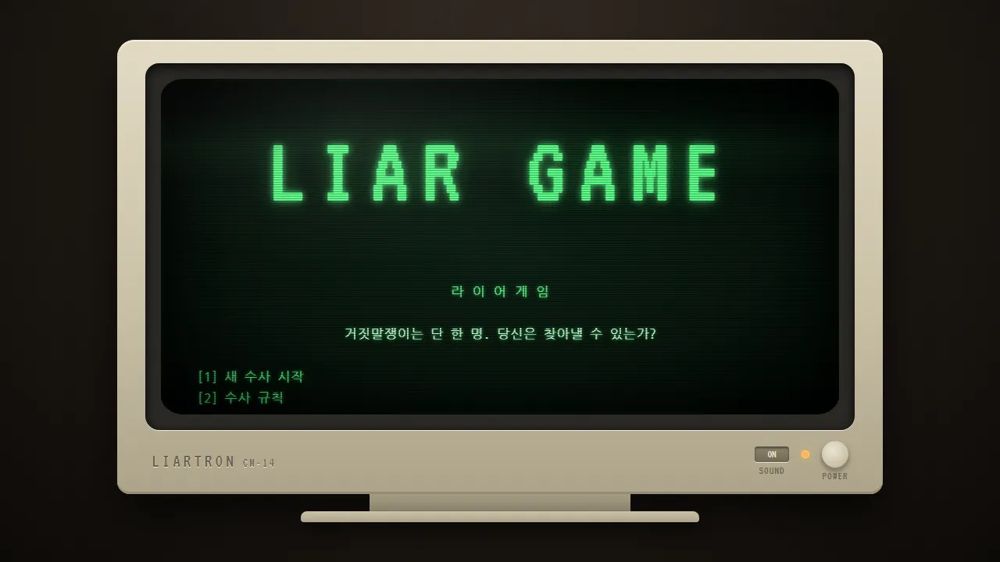
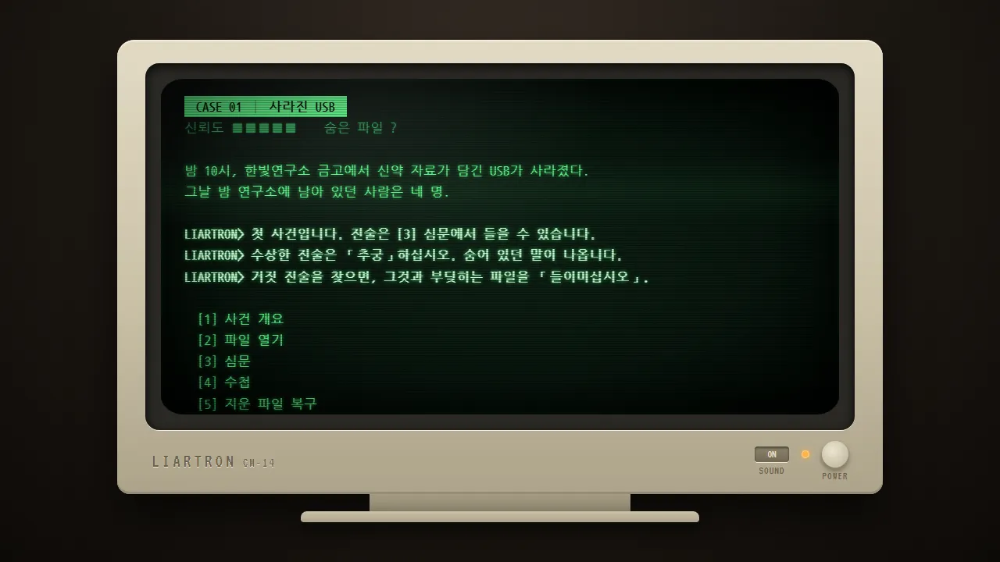
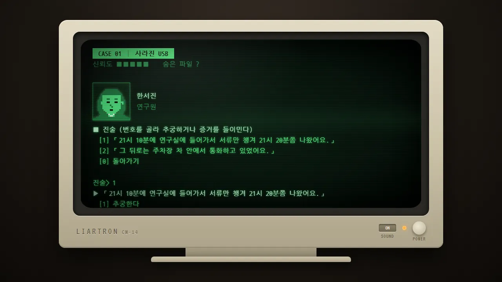
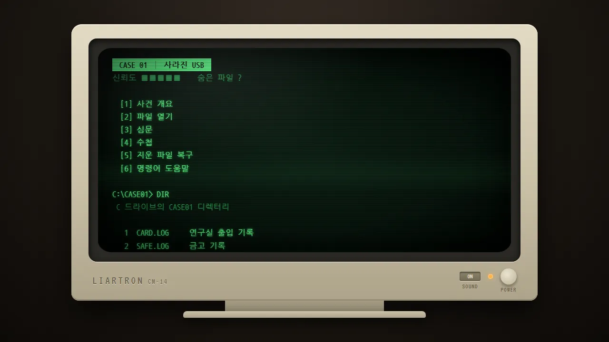

🔍 추리 게임 · 무료 · 설치 없음
라이어게임
“거짓말쟁이는 단 한 명. 당신은 찾아낼 수 있는가?”
- 전체 40분~1시간
- 사건 6개
- 키보드 · 터치 모두
- 사건마다 자동 저장
회원가입 없이 누르면 바로 시작돼요
어떤 게임인가요?
1993년 겨울, 제3수사과. 수사과에 새 컴퓨터가 들어왔어요. 증거를 정리하고 거짓말을 가려내도록 만들어진 수사 보조 프로그램, LIARTRON이에요.
사라진 USB, 호텔 방의 빈 액자, 몰래 보내진 메일. 사건마다 용의자 중 거짓말을 하는 사람은 딱 한 명뿐이에요. 나머지는 모두 진실만 말해요.
전원 버튼을 누르면 브라운관이 지직 켜지고, 키를 누를 때마다 옛날 기계식 키보드가 찰칵거려요. 사건은 하나씩 이어져서, 끝까지 가면 더 큰 이야기가 기다리고 있어요.
이렇게 해요
- STEP 1
파일을 뒤져요
컴퓨터에 남은 출입 기록·CCTV 기록을 열어 봐요. DIR, TYPE, UNDELETE 같은 진짜 도스 명령어로 지워진 파일까지 살릴 수 있어요.
- STEP 2
추궁해요
용의자의 진술을 하나 골라 캐물으면, 숨어 있던 말이 튀어나와요. 들은 말은 수첩에 차곡차곡 쌓여요.
- STEP 3
모순을 들이밀어요
거짓 진술에 그것과 부딪히는 기록을 내밀면 범인이 당황해요. 끝까지 버티는 반박도 증거로 받아쳐야 해요. 증거가 모자라면 물러나 더 조사해도 돼요.



🧾 수사 규칙
- 기록 파일은 모두 사실이에요
- 엉뚱한 증거를 내밀면 신뢰도가 한 칸 깎여요 (모두 5칸)
- 남은 신뢰도로 사건마다 S~C 등급
- 어딘가에 숨은 파일이 있어요
번호를 눌러도, 메뉴 줄을 손가락으로 눌러도 돼요. 도스 명령어는 몰라도 끝까지 할 수 있어요. 한글 자판 상태로 쳐도 알아들어요.
이런 분께 추천해요
- 옛날 컴퓨터 게임의 초록 화면이 그리운 분
- 「이 말, 어디서 앞뒤가 안 맞지?」 하며 따지는 걸 좋아하는 분
- 짧은 사건을 하나씩 풀며 큰 이야기를 따라가고 싶은 분
첫 사건에서 수사 보조 프로그램이 할 일을 하나씩 알려 줘요. 수상한 말은 일단 「추궁」해 보세요. 막히면 [4] 수첩을 열어 들은 말과 기록을 나란히 놓고 비교해 보세요. 찰칵거리는 키보드 소리가 이 게임의 맛이니 소리를 켜고 해 보세요. 모니터 아래 SOUND 스위치로 끌 수도 있어요.
📱 어떤 기기에서 하면 좋을까요?
- 가장 좋아요컴퓨터·노트북 크롬·엣지·웨일
키보드로 번호와 명령어를 치는 맛이 가장 살아요. 찰칵거리는 키보드 소리도 잘 들려요.
- 좋아요태블릿 아이패드·갤럭시탭
메뉴 줄을 손가락으로 눌러 진행해요. 가로·세로 모두 괜찮아요.
- 괜찮아요휴대폰 가로·세로 모두
충분히 할 수 있지만 글이 많아 화면이 작게 느껴질 수 있어요.
오른쪽 위 메뉴(⋮ 또는 ···)에서 「다른 브라우저로 열기」를 눌러 크롬이나 사파리로 열어 주세요. 앱 안에서는 저장이 풀릴 수 있어요.
🍎 아이폰·아이패드에서는
- ① 사파리로 열기
카카오톡·네이버 앱 안에서 열었다면 오른쪽 아래(또는 위) 메뉴에서 「사파리로 열기」를 눌러 주세요.
- ② 화면을 넓게 쓰기
이 게임에는 전체 화면 단추가 없어요. 주소창 왼쪽의 가가(aA) 버튼 → 「도구 막대 가리기」를 누르면 화면을 더 넓게 쓸 수 있어요.
- ③ 소리가 안 나요
아이폰 옆의 무음 스위치가 켜져 있으면 키보드 소리가 나지 않아요.
- ④ 진행이 사라졌어요?
사건을 하나 끝낼 때마다 자동 저장돼요. 다만 아이폰 사파리는 한동안 들어가지 않은 사이트의 기록을 스스로 지우기도 해요.
🤖 갤럭시 등 안드로이드에서는
크롬이나 삼성 인터넷으로 열면 돼요. 카카오톡·네이버 앱 안에서 열었다면 메뉴(⋮)에서 「다른 브라우저로 열기」를 눌러 주세요. 화면을 누르거나 키보드를 쓰면 소리가 나기 시작해요.
▶ 바로 해 보기
설치도, 회원가입도 필요 없어요.
라이어게임 시작하기game.edoori.co.kr/liar/